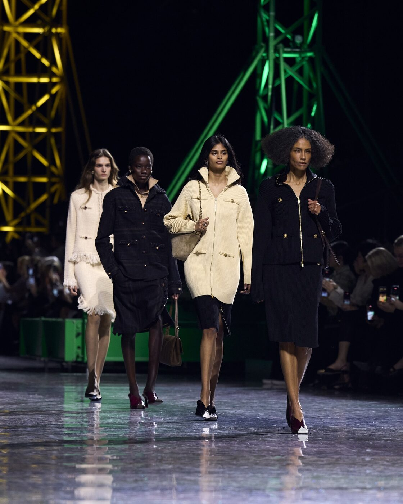

On the twenty-eighth of April, in a garden overlooking the Bay of Biscay, Matthieu Blazy presented his first Cruise collection for Chanel at Villa Larralde — returning the house, with characteristic precision and quiet reverence, to the Basque coastal town where Gabrielle Chanel opened her first couture maison in 1915.
The symmetry is almost too perfect to be accidental. Biarritz, a town of salt-bleached façades and Atlantic squalls, was where a young Coco Chanel first proved that fashion could be something other than Parisian — that it could breathe sea air, accommodate movement, refuse the corset not as a political statement but as a practical one. It was here, at 4 rue Gardères, that she opened a couture house funded by Arthur “Boy” Capel, her great love, and began dressing the aristocratic women who summered on the coast in jersey, in simplicity, in a new idea of what elegance could mean. To return to Biarritz now, more than a century later, under the direction of a designer who has made his name on the quiet radicalism of material intelligence, feels less like nostalgia and more like a declaration of intent.
Blazy arrived at Chanel in the autumn of 2024, inheriting a house that had spent the better part of a decade processing the loss of Karl Lagerfeld and navigating the interim stewardship of Virginie Viard. His appointment was greeted with the kind of breathless anticipation that fashion reserves for moments it believes might actually matter. Here was a designer who, at Bottega Veneta, had demonstrated an almost preternatural ability to make clothes that looked simple and felt revolutionary — leather that behaved like paper, denim that turned out to be cashmere, surfaces that deceived the eye while delighting the hand. What would he do with the most storied vocabulary in fashion?
A year of arrivals
The answer, delivered across three collections and now this Cruise show, has been measured, patient and quietly astonishing. His debut for Spring/Summer 2026, shown in Paris last October, was a meditation on what he called “modernity and freedom” — a phrase that could serve as a mission statement for the house itself. The tweed was there, but it had been deconstructed and reassembled with a lightness that made it feel like something encountered for the first time. The camellias were present, but abstracted, pressed into fabric as texture rather than ornament. It was a collection that respected every code while refusing to be imprisoned by any of them.
His Autumn/Winter 2026 show at the Grand Palais in March pushed further. Critics reached for the word “joy” — a term not often associated with the intellectual rigour of Blazy’s work, but one that felt entirely accurate. The colours were richer, the silhouettes more expansive, the sense of pleasure more overt. There were coats that swept the floor in shades of burnt caramel and midnight blue, quilted jackets worn with fluid trousers, evening dresses that moved like water and caught the light like something geological. If the debut had been about proving he understood Chanel, the second show was about proving he could make Chanel feel alive in a way it hadn’t in years.
And then came the couture debut in January — a collection that the house itself described as a “fairytale,” and which delivered on that promise without a trace of irony. The atelier work was extraordinary: embroideries so fine they appeared painted, constructions so light they seemed to float. It was the collection that silenced the last sceptics, the one that made it clear Blazy was not merely a caretaker but a builder, someone constructing a new chapter rather than annotating the old ones.
Biarritz is where Chanel became Chanel — not in the grand salons of Paris, but in a room by the sea where a woman decided that freedom was the greatest luxury of all.
Léa FontaineThe Cruise collection, then, arrives as the fourth movement in a symphony that has been building steadily in both confidence and emotional register. Villa Larralde, a Belle Époque residence set in grounds that slope toward the ocean, provides a setting that is at once intimate and grand — precisely the balance that Blazy has been calibrating since his arrival. The choice to stage the show outdoors, against the sound of the Atlantic and the fading April light, signals a designer who understands that Chanel has always been as much about atmosphere as about clothes.
The weight of place

Photography courtesy of Wallpaper*
What makes the return to Biarritz significant is not merely the geographical echo but the philosophical one. When Gabrielle Chanel arrived here in 1915, Europe was at war and the old certainties of fashion — the corset, the elaborate hat, the idea that women should be decorated rather than dressed — were beginning to collapse. She built something new in the ruins of the old, using materials that the establishment considered beneath contempt. Jersey was for underwear. Simplicity was for the poor. Chanel proved otherwise, and in doing so she invented not just a brand but a way of thinking about clothes that persists to this day.
Blazy, in his own quieter way, has been engaged in a similar project of redefinition. His great insight at Bottega Veneta was that luxury did not need to announce itself — that the most powerful statement a garment could make was to appear ordinary while being extraordinary. At Chanel, he has adapted this philosophy to a house that has never been quiet, finding a way to honour the codes while stripping them of their sometimes suffocating preciousness. The tweed jacket is still a tweed jacket, but in Blazy’s hands it moves differently, sits differently, means something slightly and thrillingly new.
Biarritz, with its windswept informality and its sense of being slightly apart from the world, is the perfect stage for this vision. It is a town that has always attracted people who want luxury without the performance of luxury — a place where old money wears espadrilles and where the grandest houses look out not onto manicured gardens but onto the uncontrollable sea. That tension between refinement and wildness, between control and release, is precisely what Blazy has been exploring at Chanel. In choosing to return here for his first Cruise, he is not simply paying homage to the founder. He is reminding us that Chanel was born not in a salon but in the salt air, and that the most revolutionary act in fashion has always been to make freedom look effortless.